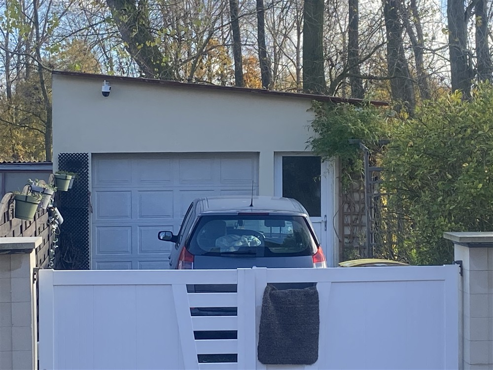

Piliers à chapeau gris, deux vantaux PVC blancs, fente centrale, ajours en escalier dans le vantail gauche.
Façade, rideau, porte, treillis, pergola, caméra et lanterne existent déjà. Manquent : piliers et portail.